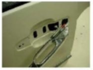
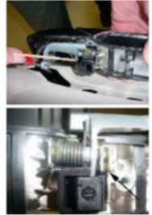
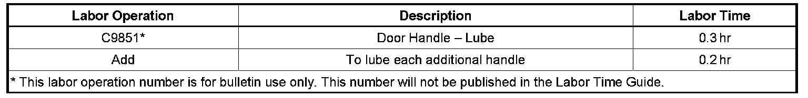

Body - Outside Door Handle(s) Squeak When Operated
TECHNICALBulletin No.: 08-08-64-007
Date: May 13, 2008
Subject:
Squeaky Outside Door Handle (Grease U-Channel of Handle)
Models:
2007-2008 Cadillac Escalade, Escalade EXT, Escalade ESV
2007-2008 Chevrolet Avalanche, Silverado, Suburban, Tahoe
2007-2008 GMC Sierra, Yukon, Yukon Denali, Yukon XL
Condition
Some customers may comment on a squeak noise coming from the door handle as the handle is actuated.
Cause
This condition may be caused by the pin and the inside of pawl surface making contact with each other, resulting in a squeak noise.
Correction
DO NOT REPLACE THE DOOR HANDLE.

1. Remove the fasteners to the door handle, leaving the rod to the latch attached.

2. Apply a generous amount of dielectric silicone grease, P/N 12345579 (in Canada, 10953481), as shown in the graphics, into the U-channel of the handle between the pawl and the tower where the gray pin enters through the spring and the pawl.
3. Cycle the handle at least 20 times to work the grease around the pin and to make sure that the squeak has been eliminated.
Warranty Information

For vehicles repaired under warranty, use the table.

Disclaimer